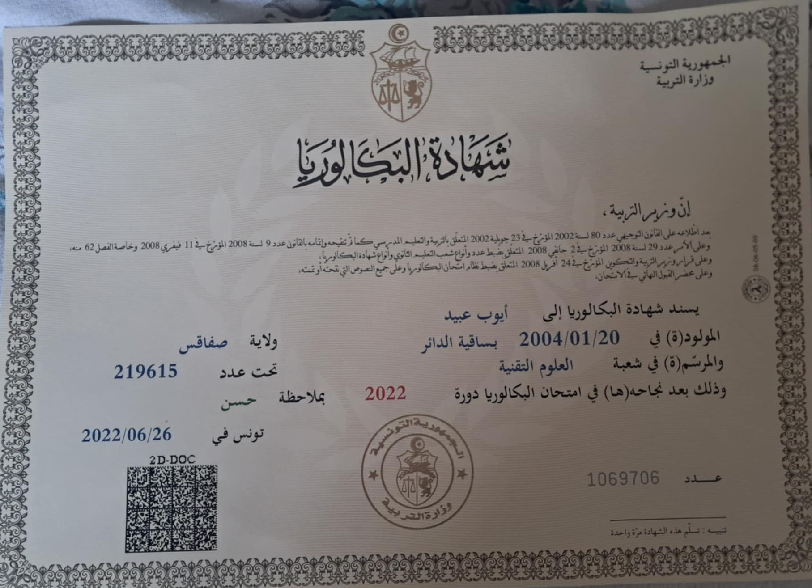
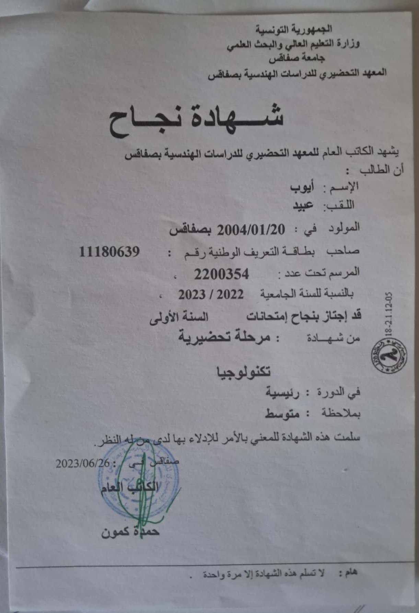

Diplôme 1: Diplôme du Baccalauréat
Établissement : Fadhel ben achour
Année d’obtention : 2022
Description : Ce diplôme me permet de choisir mon avenir et m’enseigne comment aborder l’éducation.
Diplôme 2: Diplôme de Préparatoire d'Ingénieur
Établissement : Institut Préparatoire aux Etudes d'Ingénieur de Sfax
Année d’obtention : 2024
Description : Ce diplôme me permet de choisir la filière d’ingénierie que je souhaite suivre, de réfléchir de manière critique et rapide, et d’ouvrir mon esprit
